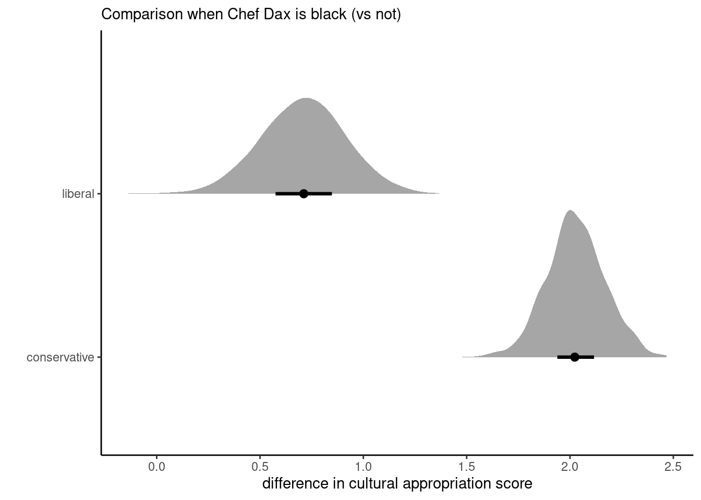
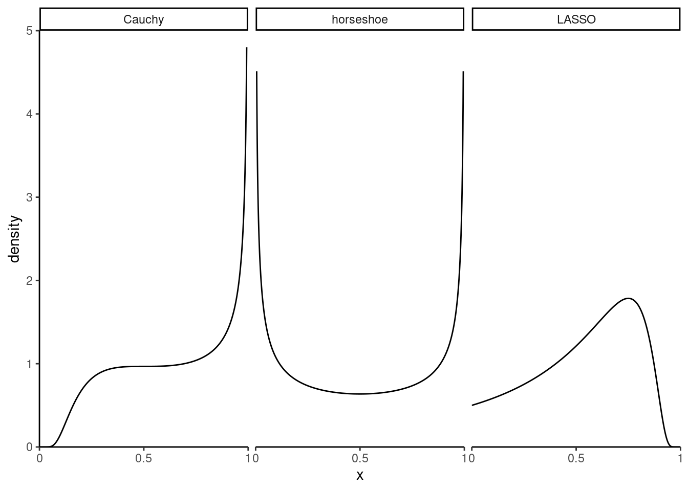
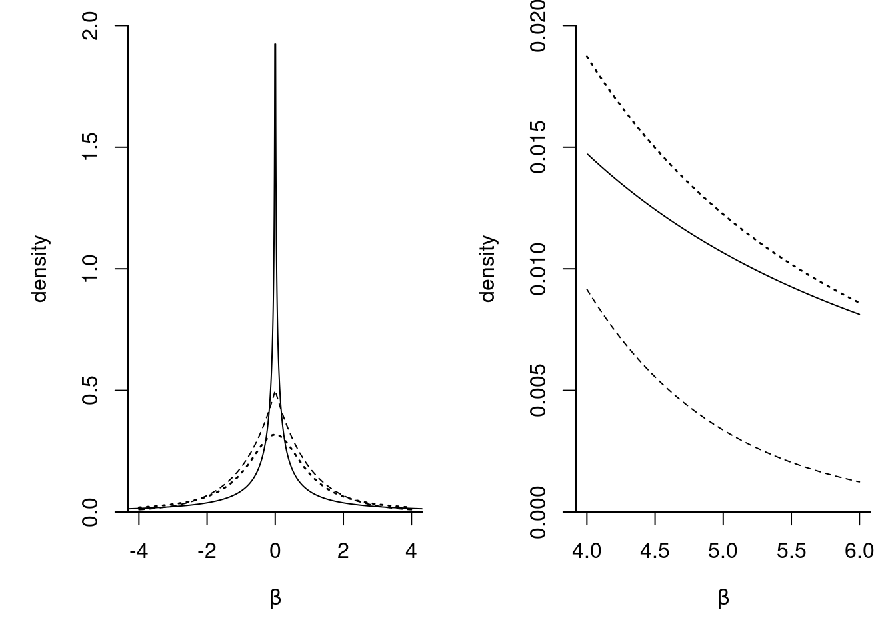
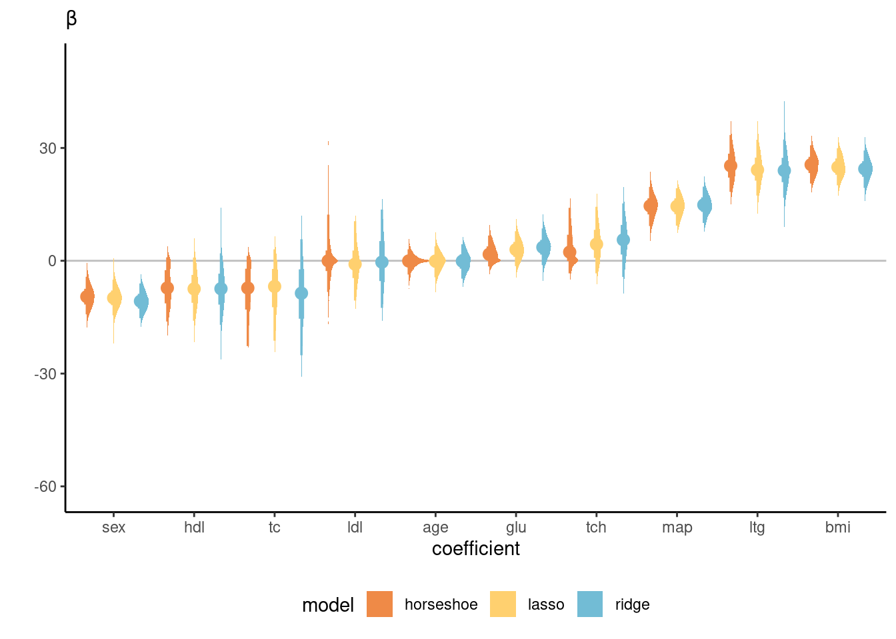

This chapter is dedicated to the study of regression models from a Bayesian standpoint. Starting with Gaussian data, we investigate the link between frequentist approaches to regularization and shrinkage priors. We also look at hierarchical models with mixed effects and variable selection using reversible jump MCMC and conditional Bayes factor.
Throughout, we consider regression models with model (or design) matrix \(\mathbf{X} \in \mathbb{R}^{n \times p}\) with centered inputs, so \(\mathbf{1}_n^\top\mathbf{X}=\mathbf{0}_p.\) We are interested in the associated vector of regression coefficients \(\boldsymbol{\beta} = (\beta_1, \ldots, \beta_p)^\top\) which describe the mean and act as weights for each covariate vector. In the ordinary linear regression model \[\begin{align*}
\boldsymbol{Y} \mid \mathbf{X}, \boldsymbol{\beta}, \omega \sim \mathsf{Gauss}_n(\beta_0\mathbf{1}_n + \mathbf{X}\boldsymbol{\beta}, \omega^{-1}\mathbf{I}_n),
\end{align*}\] so that observations are independent and homoscedastic. Inference is performed conditional on the observed covariate vectors \(\mathbf{X}_i\); we omit this dependence hereafter, but note that this can be relaxed. The intercept \(\beta_0\), which is added to capture the mean response and make it mean-zero, receives special treatment and is typically assigned an improper prior. We largely follow the exposition of Villani (2023).
The joint posterior is Gaussian-inverse gamma and can be factorized \[\begin{align*}
p(\boldsymbol{\beta}, \sigma^2 \mid y) = p(\sigma^2 \mid y) p(\boldsymbol{\beta} \mid \sigma^2, y)
\end{align*}\] where \(p(\sigma^2 \mid y) \sim \mathsf{inv. gamma}(\alpha^*, \beta^*)\) and \[\begin{align*}
\boldsymbol{\beta} \mid \sigma^2, y & \sim \mathsf{Gauss}_p(\mathbf{M}\boldsymbol{m}, \sigma^2\mathbf{M})
\\
\alpha^* &= \alpha + n/2,\\
\beta^* &=\beta + 0.5 \boldsymbol{\nu}_\beta^\top \mathbf{Q}_\beta\boldsymbol{\nu}_\beta + \boldsymbol{y}^\top\boldsymbol{y} - \boldsymbol{m}^\top\mathbf{M}\boldsymbol{m}, \\
\boldsymbol{m} &= \mathbf{Q}_\beta \boldsymbol{\nu}_\beta + \mathbf{X}^\top \mathbf{Q}_y\boldsymbol{y}\\
\mathbf{M} &= (\mathbf{Q}_\beta + \mathbf{X}^\top\mathbf{Q}_y\mathbf{X})^{-1};
\end{align*}\] the latter can be evaluated efficiently using Shermann–Morrisson–Woodbury identity. Given the conditionally conjugate priors, we can easily sample from the posterior using Gibbs sampling.
:::
–>
Proposition 8.1 (Gaussian ordinary linear regression with conjugate priors) The conjugate prior for the Gaussian regression model for the mean and precision parameters \(\boldsymbol{\beta}\) and \(\omega\), respectively, is a Gaussian-gamma and is defined hierarchically as \[\begin{align*}
\boldsymbol{\beta} \mid \omega &\sim \mathsf{Gauss}\left\{\boldsymbol{\mu}_0, (
\omega\boldsymbol{\Omega}_0)^{-1}\right\} \\
\omega &\sim \mathsf{gamma}(\nu_0/2,\tau_0/2).
\end{align*}\] Using properties of the Gaussian distribution, the sampling distribution of the ordinary least squares estimator is \(\widehat{\boldsymbol{\beta}} \sim \mathsf{Gauss}_p\{\boldsymbol{\beta}, (\omega\mathbf{X}^\top\mathbf{X})^{-1}\}\).
The conditional and marginal posterior distributions for the mean coefficients \(\boldsymbol{\beta}\) and for the precision \(\omega\) are \[\begin{align*}
\boldsymbol{\beta} \mid \omega, \boldsymbol{y} &\sim \mathsf{Gauss}_p\left\{\boldsymbol{\mu}_n, (\omega\boldsymbol{\Omega}_n)^{-1}\right\} \\
\omega \mid \boldsymbol{y} &\sim \mathsf{gamma}\left\{(\nu_0 + n)/2, \tau^2_n/2\right\}, \\
\boldsymbol{\beta} \mid \boldsymbol{y} &\sim \mathsf{Student}_p(\boldsymbol{\mu}_n, \tau_n/(\nu_0+n) \times \mathbf{\Omega}_n^{-1}, \nu_0 + n)
\end{align*}\] where \[\begin{align*}
\boldsymbol{\Omega}_n &= \mathbf{X}^\top\mathbf{X} + \boldsymbol{\Omega}_0\\
\boldsymbol{\mu}_n &= \boldsymbol{\Omega}_n^{-1}(\mathbf{X}^\top\mathbf{X}\widehat{\boldsymbol{\beta}} + \boldsymbol{\Omega}_0\boldsymbol{\mu}_0) = \boldsymbol{\Omega}_n^{-1}(\mathbf{X}^\top\boldsymbol{y} + \boldsymbol{\Omega}_0\boldsymbol{\mu}_0)\\
\tau_n &= \tau_0 + (\boldsymbol{y} - \mathbf{X}\widehat{\boldsymbol{\beta}})^\top(\boldsymbol{y} - \mathbf{X}\widehat{\boldsymbol{\beta}}) + (\boldsymbol{\mu}_n - \widehat{\boldsymbol{\beta}})^\top \mathbf{X}^\top\mathbf{X}(\boldsymbol{\mu}_n - \widehat{\boldsymbol{\beta}}) \\& \quad + (\boldsymbol{\mu}_n-\boldsymbol{\mu}_0)^\top\boldsymbol{\Omega}_0(\boldsymbol{\mu}_n-\boldsymbol{\mu}_0)
\end{align*}\]
Proposition 8.2 (Decomposition of quadratic forms) For quadratic forms (in \(\boldsymbol{x}\)) with \[\begin{align*}
& (\boldsymbol{x} - \boldsymbol{a})^\top \mathbf{A}(\boldsymbol{x} - \boldsymbol{a}) + (\boldsymbol{x} - \boldsymbol{b})^\top \mathbf{B}(\boldsymbol{x} - \boldsymbol{b}) \\\quad &=
(\boldsymbol{x} - \boldsymbol{c})^\top \mathbf{C}(\boldsymbol{x} - \boldsymbol{c}) + (\boldsymbol{c}-\boldsymbol{a})^\top\mathbf{A}(\boldsymbol{c}-\boldsymbol{a}) + (\boldsymbol{c}-\boldsymbol{b})^\top\mathbf{B}(\boldsymbol{c}-\boldsymbol{b})\\
&\stackrel{\boldsymbol{x}}{\propto} (\boldsymbol{x} - \boldsymbol{c})^\top \mathbf{C}(\boldsymbol{x} - \boldsymbol{c})
\end{align*}\] where \(\mathbf{C} = \mathbf{A} + \mathbf{B}\) and \(\boldsymbol{c}= \mathbf{C}^{-1}(\mathbf{A}\boldsymbol{a} + \mathbf{B}\boldsymbol{b})\).
Proof. The improper prior \(p(\boldsymbol{\beta}, \sigma^2) \propto \sigma^{-2}\) can be viewed as a special case of the conjugate prior when the variance of the Gaussian is infinite and the \(\mathsf{gamma}(a,b)\) when both \(a, b \to 0.\)
Write the posterior as \[\begin{align*}
p(\boldsymbol{\beta}, \omega \mid \boldsymbol{y}) &\propto p(\boldsymbol{y} \mid \boldsymbol{\beta}, \omega) p(\omega)
\\& \propto \omega^{n/2} \exp\left\{-\frac{\omega}{2}(\boldsymbol{y}-\mathbf{X}\boldsymbol{\beta})^\top(\boldsymbol{y}-\mathbf{X}\boldsymbol{\beta})\right\}\\& \times |\omega\boldsymbol{\Omega}_0|^{1/2}\exp \left\{ -\frac{\omega}{2} (\boldsymbol{\beta}-\boldsymbol{\mu}_0)^\top\boldsymbol{\Omega}_0(\boldsymbol{\beta}-\boldsymbol{\mu}_0)\right\} \\& \times \omega^{\nu_0/2-1}\exp\left(-\tau_0\omega/2\right).
\end{align*}\] We rewrite the first quadratic form in \(\boldsymbol{y}-\mathbf{X}\boldsymbol{\beta}\) using the orthogonal decomposition \[\begin{align*}
(\boldsymbol{y}-\mathbf{X}\widehat{\boldsymbol{\beta}}) + (\mathbf{X}\widehat{\boldsymbol{\beta}} - \mathbf{X}\boldsymbol{\beta})
\end{align*}\] since \((\boldsymbol{y}-\mathbf{X}\widehat{\boldsymbol{\beta}})^\top (\mathbf{X}\widehat{\boldsymbol{\beta}} - \mathbf{X}\boldsymbol{\beta}) = 0.\) We can pull together terms and separate the conditional posterior \(p(\boldsymbol{\beta} \mid \boldsymbol{y}, \omega)\) and \(p(\omega \mid \boldsymbol{y})\) as \[\begin{align*}
p(\boldsymbol{\beta}, \omega \mid \boldsymbol{y}) &\propto \omega^{(n+p+\nu_0)/2 -1} \exp\left[-\frac{\omega}{2}\left\{\tau_0 + (\boldsymbol{y}-\mathbf{X}\widehat{\boldsymbol{\beta}})^\top(\boldsymbol{y}-\mathbf{X}\widehat{\boldsymbol{\beta}})\right\}\right]
\\& \times \exp \left[-\frac{\omega}{2}\left\{(\widehat{\boldsymbol{\beta}} - \boldsymbol{\beta})^\top\mathbf{X}^\top\mathbf{X}(\widehat{\boldsymbol{\beta}} - \boldsymbol{\beta})+ (\boldsymbol{\beta}-\boldsymbol{\mu}_0)^\top\boldsymbol{\Omega}_0(\boldsymbol{\beta}-\boldsymbol{\mu}_0)\right\}\right]
\end{align*}\] and using Proposition 8.2 for the terms in the exponent with \(\boldsymbol{a} = \widehat{\boldsymbol{\beta}}\), \(\mathbf{A}=\mathbf{X}^\top\mathbf{X}\), \(\boldsymbol{b} = \boldsymbol{\mu}_0\) and \(\mathbf{B}=\boldsymbol{\Omega}_0\), we find \[\begin{align*}
p(\boldsymbol{\beta}, \omega \mid \boldsymbol{y}) & \propto
\omega^{(n+\nu_0)/2 -1} \exp\left(-\frac{\omega\tau_n}{2}\right)
\\& \times \omega^{p/2}\exp\left\{-\frac{1}{2}(\boldsymbol{\beta} - \boldsymbol{\mu}_n)^\top(\omega\mathbf{\Omega}_n)(\boldsymbol{\beta} - \boldsymbol{\mu}_n)\right\}
\end{align*}\] whence the decomposition of the posterior as a Gaussian conditional on the precision, and a gamma for the latter. The marginal of \(\boldsymbol{\beta}\) is obtained by regrouping all terms that depend on \(\omega\) and integrating over the latter, recognizing the integral as an unnormalized gamma density, and thus \[\begin{align*}
p(\boldsymbol{\beta}, \mid \boldsymbol{y}) & \stackrel{\boldsymbol{\beta}}{\propto} \int_0^\infty \omega^{(\nu_0 + n + p)/2 -1}\exp\left\{- \omega \frac{\tau_n +(\boldsymbol{\beta} - \boldsymbol{\mu}_n)^\top\mathbf{\Omega}_n(\boldsymbol{\beta} - \boldsymbol{\mu}_n)}{2}\right\} \mathrm{d} \omega
\\&\stackrel{\boldsymbol{\beta}}{\propto} \left\{\frac{\tau_n +(\boldsymbol{\beta} - \boldsymbol{\mu}_n)^\top\mathbf{\Omega}_n(\boldsymbol{\beta} - \boldsymbol{\mu}_n)}{2}\right\}^{-(\nu_0 + n + p)/2}
\\& \stackrel{\boldsymbol{\beta}}{\propto} \left\{1 + \frac{(\boldsymbol{\beta} - \boldsymbol{\mu}_n)^\top\frac{\nu_0 + n}{\tau_n}\mathbf{\Omega}_n(\boldsymbol{\beta} - \boldsymbol{\mu}_n)}{\nu_0 + n}\right\}^{-(\nu_0 + n + p)/2}
\end{align*}\] so must be a Student-\(t\) distribution with location \(\boldsymbol{\mu}_n\), scale matrix \(\tau_n/(\nu_0+n) \times \mathbf{\Omega}_n^{-1}\) and \(\nu_0+n\) degrees of freedom.
The choice of prior precision \(\boldsymbol{\Omega}_0\) is left to the user, but typically the components of the vector \(\boldsymbol{\beta}\) are left apriori independent, with \(\boldsymbol{\Omega}_0 \propto \lambda\mathbf{I}_n\).
Example 8.1 Study 4 of Lin et al. (2024) focuses on cultural appropriation using a fictional scenario focusing on soul food recipe cookbook from Chef Dax. The chef who was either African-American or not, and the authors manipulated the description of the way he obtained the recipes (either by peeking without permission in kitchens, by asking permission or without them mentioning altogether for the control category). Authors postulated that the perception of appropriation would vary by political ideology (liberal or conservative). The study results in a 3 by 2 by 2 three-way between-subject ANOVA.
We use the multivariate regression model to draw samples from \(\boldsymbol{\beta}\) and use these to reconstruct the subgroup sample means for each of the 12 categories. Then, we consider the difference in perception of cultural appropriation for participants when Chef Dax is black (no cultural appropriation) versus when he is not, separately for liberals and conservatives, by pooling data across all different descriptions. Figure 8.1 shows the posterior distribution of those contrasts, which indicate that on average liberal perceive cultural appropriation more strongly (with nearly 2 points more), than conservatives (0.7 points on average).
Code
data(LKUK24_S4, package ="hecedsm")options(contrasts =c("contr.sum", "contr.poly"))model <-lm(appropriation ~ politideo * chefdax * brandaction,data = LKUK24_S4)# Model matrix, response and dimensionsy <- LKUK24_S4$appropriationX <-model.matrix(model)n <-nrow(X)p <-ncol(X)# Priors# We set zero for contrasts and a small value# for the global mean (since response is on [1,7] Likert scale)# with lower values indicating more cultural appropriation)mu_0 <-c(2.5, rep(0, p-1))Omega_0 <-diag(p)# Prior precision of 0.25 (variance of 4)nu_0 <-0.25tau_0 <-1Omega_n_inv <-solve(crossprod(X) + Omega_0)mu_n <- Omega_n_inv %*% (crossprod(X, y) +crossprod(Omega_0, mu_0))tau_n <- tau_0 +sum(resid(model)^2) +c(crossprod(X %*% (mu_n-coef(model)))) +sum((mu_n-mu_0)^2)# Posterior draws from the modelomega <-rgamma(n =1e3L, shape = (nu_0 + n)/2, tau_n^2/2)beta <-matrix(rnorm(n =1e3L*p), ncol = p) %*%chol(Omega_n_inv)beta <-sweep(beta, 1, sqrt(omega), "/")beta <-sweep(beta, 2, mu_n, "+")# Posterior quartiles for betabeta_qu <-t(apply(beta, 2, quantile, probs =c(0.25,0.5,0.75)))# Standard dev. for beta (from Student-t)beta_se <-sqrt((nu_0 + n)/(nu_0 + n -2) *diag(tau_n/(nu_0 + n) * Omega_n_inv))beta <- TruncatedNormal::rtmvt(n =1e3L,mu = mu_n, sigma = tau_n/(nu_0 + n) * Omega_n_inv, df = nu_0 + n)dfg <-expand.grid(politideo =c("conservative", "liberal"),chefdax =c("not black", "black"),brandaction =c("peeking","permission", "control"))mm <-model.matrix( ~ politideo * chefdax * brandaction,data = dfg)# Subgroup means for each of the 12 categoriesmu <-tcrossprod(beta, mm)# Contrast weights, averaging over brandactionw1 <-rep(c(1, 0, -1, 0), length.out =nrow(dfg))/3w2 <-rep(c(0, 1, 0, -1), length.out =nrow(dfg))/3# Posterior distribution of contraststc <- mu %*%cbind(w1, w2)
The coefficients and standard errors from the linear regression are very nearly similar to the posterior mean and standard deviations for \(\boldsymbol{\beta}\) from the marginal Student-\(t,\) owing to the large sample size and uninformative priors.

Figure 8.1: Difference in appropriation rating for black vs non-black Chef Dax, average accross different levels of brand action.
In multivariate regression, it sometimes is useful to specify correlated coefficients (e.g., for random effects). This leads to the necessity to set a prior on a covariance matrix.
Proposition 8.3 (Wishart distribution) Let \(\boldsymbol{Q}\) by a random \(p \times p\) symmetric positive definite matrix with Wishart distribution, denoted \(\mathbf{Q} \sim \mathsf{Wishart}_p(\nu, \mathbf{S})\) for \(\nu>0\) degrees of freedom and scale \(\mathbf{S}\). It’s density is proportional to \[\begin{align*}
f(\boldsymbol{Q}) \stackrel{\boldsymbol{Q}}{\propto} |\boldsymbol{Q}|^{(\nu-p-1)/2}\exp\{-\mathrm{tr}(\mathbf{S}^{-1}\boldsymbol{Q})/2\}, \qquad \nu > p-1.
\end{align*}\] where \(|\cdot|\) denotes the determinant of the matrix and \(\mathrm{tr}\) the trace operator. The Wishart also arises from considering \(n \geq p\) independent and identically distributed mean zero Gaussian vectors \(\boldsymbol{Y}_i \sim \mathsf{Gauss}_p(\boldsymbol{0}_p, \mathbf{S})\), where \[\begin{align*}
\sum_{i=1}^{\nu} \boldsymbol{Y}_i\boldsymbol{Y}_i^\top \sim \mathsf{Wishart}_p(\nu, \mathbf{S}).
\end{align*}\] For prior elicitation, \(\nu\) is thus a prior sample size, whereas we can specify \(\mathbf{S}\) using the fact that the mean of the Wishart is \(\nu \mathbf{S}\); taking an identity matrix is standard. For more mathematical properties, consult Chapter 8 of Eaton (2007).
Definition 8.1 (Inverse Wishart) Analogous to the relationship between gamma prior for the precision and inverse gamma for the variance, we can also similarly consider a prior for the covariance matrix \(\boldsymbol{\Sigma} = \boldsymbol{Q}^{-1}\). Applying the change of variable formula, we get Jacobian \(|\boldsymbol{\Sigma}|^{p+1}\), and so \(\boldsymbol{\Sigma}\) is inverse Wishart \(\mathsf{inv. Wishart}(\nu, \mathbf{S}^{-1}),\) with density proportional to \[\begin{align*}
p(\boldsymbol{\Sigma}) \propto |\boldsymbol{\Sigma}|^{-(\nu+p+1)/2} \exp\left\{-\frac{1}{2} \mathrm{tr}\left(\boldsymbol{S}^{-1}\boldsymbol{\Sigma}^{-1}\right)\right\}
\end{align*}\] with expectation \(\mathbf{S}^{-1}(\nu-p-1)\) for \(\nu > p+1.\)
Proposition 8.4 (Wishart as conjugate prior in Gaussian model) Consider \(\boldsymbol{\mu} \sim \mathsf{Gauss}_p(\boldsymbol{\mu}_0, \boldsymbol{Q}^{-1})\) and \(\boldsymbol{Q} \sim \mathsf{Wishart}_p(\nu, \mathbf{S})\) for \(\nu \geq p\). Then, the conditional density of \(\boldsymbol{Q} \mid \boldsymbol{\mu}, \boldsymbol{\mu}_0\) is proportional to \[\begin{align*}
|\boldsymbol{Q}|^{1/2} \exp \left\{ -\frac{1}{2} (\boldsymbol{\mu}-\boldsymbol{\mu}_0)^\top\boldsymbol{Q}(\boldsymbol{\mu}-\boldsymbol{\mu}_0)\right\} |\boldsymbol{Q}|^{(\nu-p-1)/2}\exp\{-\mathrm{tr}(\mathbf{S}^{-1}\boldsymbol{Q})/2\}
\end{align*}\] and thus \(\mathsf{Wishart}_p\{\nu + 1/2, \boldsymbol{S} + (\boldsymbol{\mu}-\boldsymbol{\mu}_0)(\boldsymbol{\mu}-\boldsymbol{\mu}_0)^\top\}.\) To see this, note that a \(1 \times 1\) matrix is equal to it’s trace, and the trace operator is invariant to cyclic of it’s argument, meaning that \[\begin{align*}
(\boldsymbol{\mu}-\boldsymbol{\mu}_0)^\top\boldsymbol{Q}(\boldsymbol{\mu}-\boldsymbol{\mu}_0) = \mathrm{tr}\left\{ \boldsymbol{Q}(\boldsymbol{\mu}-\boldsymbol{\mu}_0)(\boldsymbol{\mu}-\boldsymbol{\mu}_0)^\top\right\}.
\end{align*}\] We then combine elements to get the parameters. This extends naturally to the case of \(n\) independent observations, for example linear regression model.
Proposition 8.5 (Priors for variance matrices) The marginal precision for the Wishart variate are gamma distributed with the same degrees of freedom \(\nu\). The problem with using this prior is that it has a single parameter governing all scale parameters (i.e., the marginal variance) and the absolute value of the correlation and marginal variance parameters are negatively related (Gelman et al. 2013), as seen in Figure 8.2. Large variance thus correspond to small correlations shrunk towards zero when the degrees of freedom increase. There exists alternative distributions, such as the scaled-inverse Wishart, that add redundant scale parameters to decouple \(\mathrm{diag}(\boldsymbol{\xi}) \times \boldsymbol{\Sigma} \times \mathrm{diag}(\boldsymbol{\xi})\), but we refrain from pursuing these here.
Figure 8.2: Prior draws from a bivariate inverse Wishart with identity scale matrix and \(\nu \in \{3, 20\}\) degrees of freedom.
A better alternative is to specify different prior for each marginal scale \(\sigma_j\) and a prior on the correlation matrix \(\mathbf{R}.\) For the latter, the onion peel or LKJ prior, named after the authors of Lewandowski, Kurowicka, and Joe (2009), is \(p(\mathbf{R}) \propto |\mathbf{R}|^{\eta-1}\) for a scale \(\eta>0.\) The case \(\eta=1\) leads to uniform over the space of correlation matrices, and \(\eta>1\) favours the identity matrix.
8.1 Shrinkage priors
In contexts where the number of regressors \(p\) is considerable relative to the sample size \(n\), it may be useful to constrain the parameter vector if we assume that the signal is sparse, with a large proportion of coefficients that should be zero. This is notably important when the ratio \(p/n \to c\) for \(c > 0,\) meaning that the number of coefficients and covariates increases proportional to the sample size. Shrinkage priors can regularize and typically consist of distributions that have a mode at zero, and another that allows for larger signals.
The scale parameters and hyperparameters can be estimated jointly with the model, and uncertainty diagnostics follow naturally. We assume that coefficients \(\beta_j\) are independent apriori, although it is possible to specify group structures (e.g., for handling coefficients associated to a common categorical covariate with \(K\) levels, represented by \(K-1\) columns of dummy group indicators).
Proposition 8.6 (Spike-and-slab prior) The spike-and-slab prior is a two-component mixture that assigns a positive probability to zero via a point mass or a vary narrow distribution centered at the origin (the spike) and the balance to the slab, a diffuse distribution.
The spike-and-slab prior was originally proposed by Mitchell and Beauchamp (1988) with a uniform on a large interval and a point mass at zero. The term was also used in George and McCulloch (1993), which replaced the prior by a mixture of Gaussians, one of which diffuse and the other with near infinite precision and centered at the origin. The latter is known under the vocable stochastic search variable selection prior. Letting \(\gamma_j \in [0,1]\) denote the probability of the slab or inclusion of the variable, the independent priors for the regression coefficients are \[\begin{align*}
\beta_j \mid \gamma_j, c_j^2,\phi^2_j \sim (1-\gamma_j) \mathsf{Gauss}(0, \phi^2_j) + \gamma_j \mathsf{Gauss}(0, \sigma_j^2\phi^2)
\end{align*}\] where \(\sigma^2_j\) is very nearly zero. We set a Jeffrey’s prior for \(\gamma_j \sim \mathsf{beta}(0.5, 0.5)\) and typically \(\phi_j^2=0.001\) or a small number if using a Gaussian. The construction allows for variable augmentation with mixture indicators and Gibbs sampling, although convergence isn’t trivial.
Proposition 8.7 (Horseshoe prior) The horseshoe prior of Carvalho, Polson, and Scott (2010) is a hierarchical prior of the form \[\begin{align*}
\beta_j \mid \sigma^2_j \sim \mathsf{Gauss}(0, \sigma^2_j), \quad \sigma^2_j \mid \lambda \sim \mathsf{Student}_{+}(0, \lambda, 1), \quad \lambda \sim \mathsf{Student}_{+}(0, \omega, 1)
\end{align*}\] where \(\mathsf{Student}_{+}(0, a, 1)\) denotes a half-Cauchy distribution with scale \(a>0,\) truncated on \(\mathbb{R}_{+}.\)
This prior has no explicit density, but is continuous and can be simulated. It is useful to consider the behaviour of the random variance \(\sigma^2_j\) term, which leads to an unconditional scale mixture of Gaussian for \(\beta_j\). More useful to understanding is looking at \(\kappa = 1 - 1/(1+\sigma^2)\), which gives a weight in \([0,1].\) We can see what happens to the shrunk components close to zero by looking at the density of \(\kappa \to 0\), and similarly at the large signals when \(\kappa \to 1.\) The Cauchy prior does not shrink towards zero, and lets large signals pass, whereas the Bayesian LASSO double exponential shrinkage leads to attenuation of strong signals. The horseshoe prior name comes from the shape of the prior, which leads to a shrinkage analog to \(\mathsf{beta}(1/2, 1/2)\) and thus penalizes, forcing components to be either large or small.
Figure 8.3 shows the weighting implied by the mixture density for a Cauchy prior on the variance, the double exponential of the Laplace from Bayesian LASSO and the horseshoe.

Figure 8.3: Density of penalization weights \(\kappa\) of spike (near zero) and slab (near one) for three shrinkage priors.
In the Bayesian paradigm, regularization is achieved via priors that have mass at or towards zero, pushing coefficients of the regression model towards zero unless there is strong evidence from the likelihood against this. We however want to allow non-zero coefficients, typically by setting coefficient-specific parameters with a heavy tailed distribution to prevent overshrinking. Most if not all parameter can be viewed as scale mixtures of Gaussian.
We make a distinction between global shrinkage priors those that consider a common shrinkage parameter for all regression coefficients, to be compared with local scale mixtures that have coefficient-specific parameters.

Figure 8.4: Marginal density for a regression coefficient \(\beta\) with horseshoe prior (full), Laplace (dashed) and a Student-\(t\) (thick dotted). The plot on the right shows the tail behaviour. The density of the horseshoe is unbounded at the origin. Inspired from Figure 1 of Carvalho, Polson, and Scott (2010).
While the horseshoe prior guarantees that large coefficients are not regularized, this feature of the shrinkage prior is harmful in certain instances, for example separation of variables for logistic regression. Markov chain Monte Carlo simulations are hampered by these parameters whose posterior mean does not exist, leading to poor mixing. Some very weak regularization for these big components can thus help. Piironen and Vehtari (2017) proposed the regularized horseshoe, nicknamed Finnish horseshoe, where \[\begin{align*}
\beta_j \mid \lambda, \tau_j, c^2 &\sim \mathsf{Gauss}\left(0, \lambda\frac{c^2\tau_j^2}{c^2 + \tau^2_j\lambda^2}\right), \\
\tau_j &\sim \mathsf{Student}_{+}(0, 1, 1)\\
c^2 \mid s^2, \nu &\sim \mathsf{inv. gamma}(\nu/2, \nu s^2/2).
\end{align*}\] When \(\tau^2\lambda^2_j\) is much greater than \(c^2\), this amounts to having a Student slab with \(\nu\) degrees of freedom for large coefficients; taking a small value of \(\nu\) allows for large, but not extreme components, and the authors use \(s^2=2, \nu=4.\) The above specification does not specify the prior for the global scale \(\lambda\), for which Piironen and Vehtari (2017) recommend using an empirical Bayes prior, with \[\lambda \sim \mathsf{Student}_{+}\left\{0, \frac{p_0}{(p-p_0)}\frac{\sigma}{n^{1/2}}, 1\right\},\] where \(p_0\) is a prior guess for the number of non-zero components out of \(p,\)\(n\) is the sample size and \(\sigma\) is some level of the noise.
Example 8.2 (Comparison of shrinkage priors) We revisit the diabetes data from the R package lars, which was used in (Park.Casella:2009?) to illustrate the Bayesian LASSO. We consider three methods: the default Gaussian prior, which gives a ridge penalty, the Bayesian LASSO and finally the horseshoe. Models are fitted using the bayesreg package.
Figure 8.5 shows the ordered coefficients for each method. We can see that the ridge has the widest intervals of all methods, providing some shrinkage only for large values of \(\beta\). The horseshoe has typically narrower intervals, with more mass in a neighborhood of zero for smaller coefficients, and asymmetric intervals.

Figure 8.5: Density estimates for regression coefficients with Gaussian (ridge), double exponential (Laplace) and horseshoe priors for the diabetes data.
One aspect worth mentioning is that the horseshoe prior impacts strongly the geometry and leads to slower mixing: the effective sample size fraction relative to the number of samples ranges from 15% to 79%, compared to 60% to 100% for the Bayesian LASSO and near-independent draws with the conjugate ridge.
Carvalho, Carlos M., Nicholas G. Polson, and James G. Scott. 2010. “The Horseshoe Estimator for Sparse Signals.”Biometrika 97 (2): 465–80. https://doi.org/10.1093/biomet/asq017.
Gelman, Andrew, John B. Carlin, Hal S. Stern, David B. Dunson, Aki Vehtari, and Donald B. Rubin. 2013. Bayesian Data Analysis. 3rd ed. New York: Chapman; Hall/CRC. https://doi.org/10.1201/b16018.
George, Edward I., and Robert E. McCulloch. 1993. “Variable Selection via Gibbs Sampling.”Journal of the American Statistical Association 88 (423): 881–89. https://doi.org/10.1080/01621459.1993.10476353.
Lewandowski, Daniel, Dorota Kurowicka, and Harry Joe. 2009. “Generating Random Correlation Matrices Based on Vines and Extended Onion Method.”Journal of Multivariate Analysis 100 (9): 1989–2001. https://doi.org/10.1016/j.jmva.2009.04.008.
Lin, Jason D, Nicole You Jeung Kim, Esther Uduehi, and Anat Keinan. 2024. “Culture for Sale: Unpacking Consumer Perceptions of Cultural Appropriation.”Journal of Consumer Research. https://doi.org/10.1093/jcr/ucad076.
Mitchell, T. J., and J. J. Beauchamp. 1988. “Bayesian Variable Selection in Linear Regression.”Journal of the American Statistical Association 83 (404): 1023–32. https://doi.org/10.1080/01621459.1988.10478694.
Piironen, Juho, and Aki Vehtari. 2017. “Sparsity Information and Regularization in the Horseshoe and Other Shrinkage Priors.”Electronic Journal of Statistics 11 (2): 5018–51. https://doi.org/10.1214/17-ejs1337si.